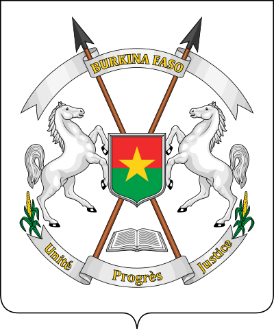

Блок навигации
- Ширина 15em
- Должен присутствовать цвет фона
- Расположение слева
- Буркина́-Фасо́[7] (встречается также написание без дефиса: Буркина́ Фасо́[8]) (фр. Burkina Faso [buʁkiˈna faˈso]) — государство в Западной Африке.
Статья 1
Граничит с Мали на севере, с Нигером — на востоке,с Бенином — на юго-востоке, с Того и Ганой — на юге и с Кот-д’Ивуаром — на юго-западе.
Выхода к морю не имеет.
Территория — 274 200 км², население — 20,8 млн человек (в 2020 году, перепись[2]). Столица — Уагадугу.
Статья 2
Название страны означает «родина честных людей»(в переводе с языка мооре «буркина́» — «честные люди», в переводе с языка дьюла «фасо́» — «отечество»).
Другая версия перевода — «страна достойных людей».
До 1984 года страна называлась «Верхняя Вольта», что было обусловлено гидронимами её важнейших рек.
